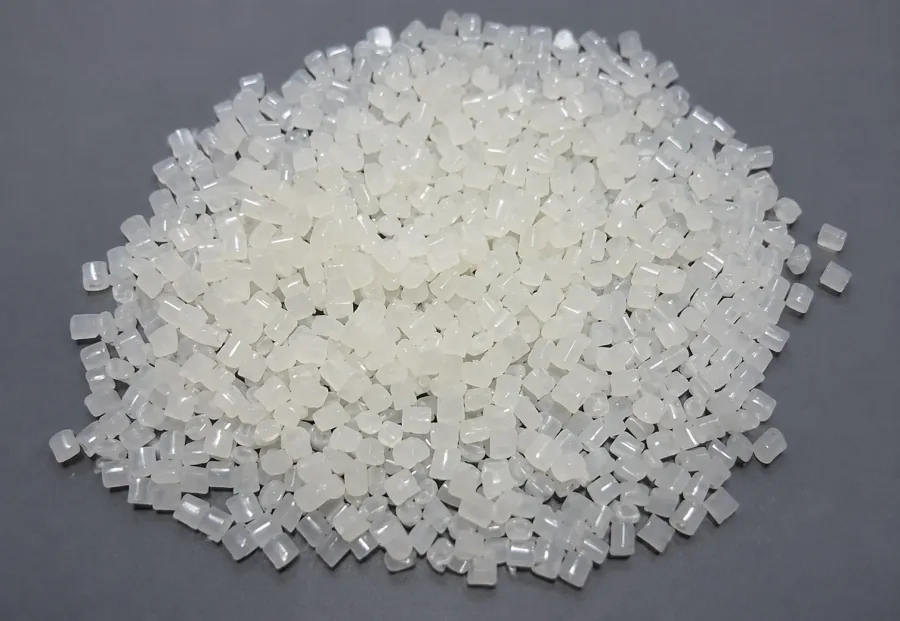
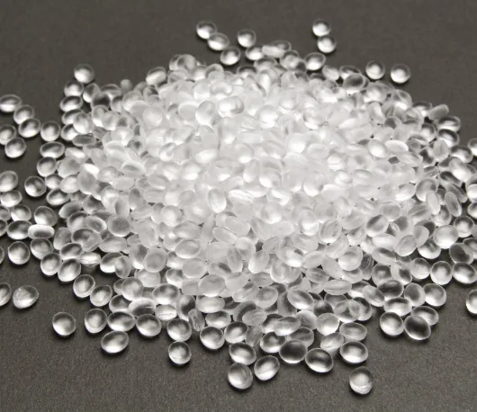
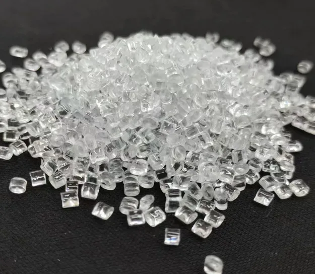
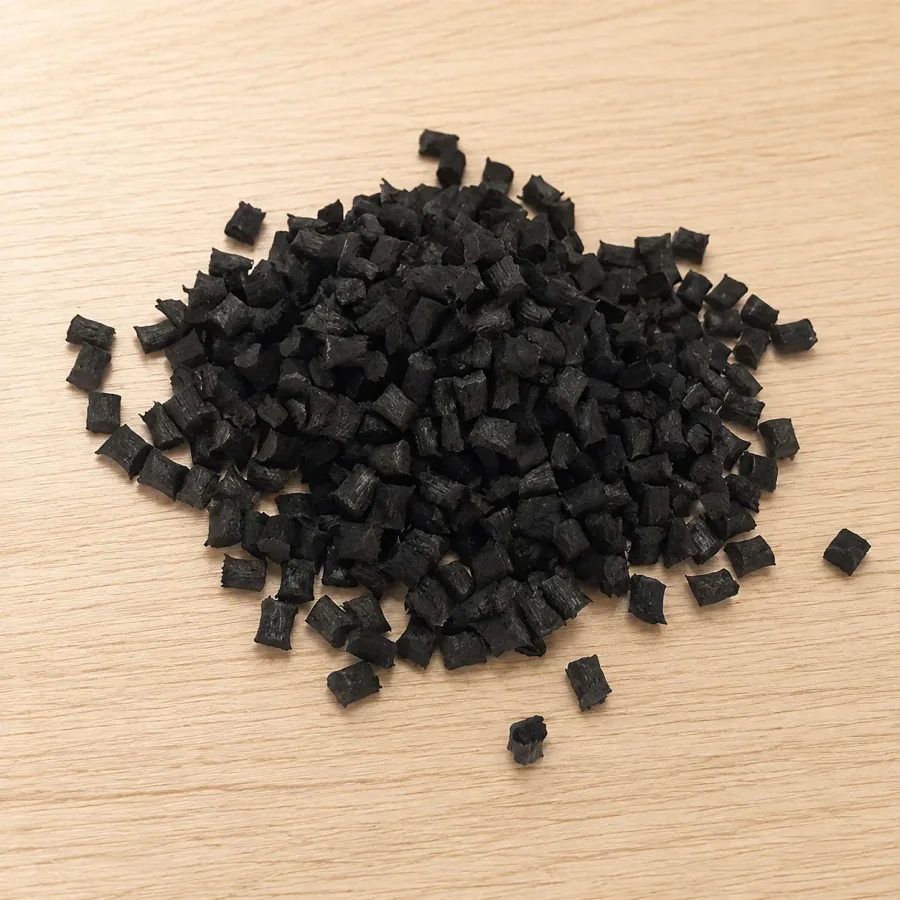
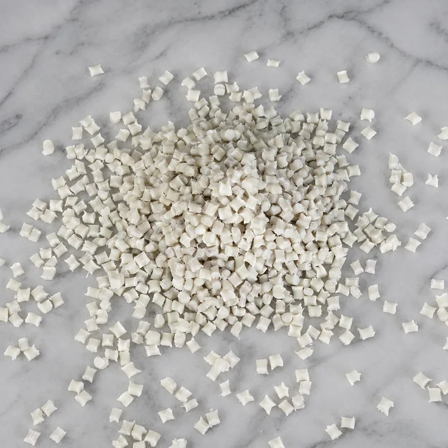
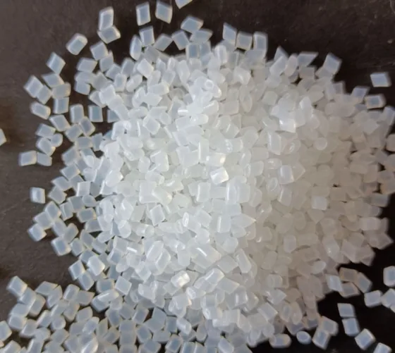
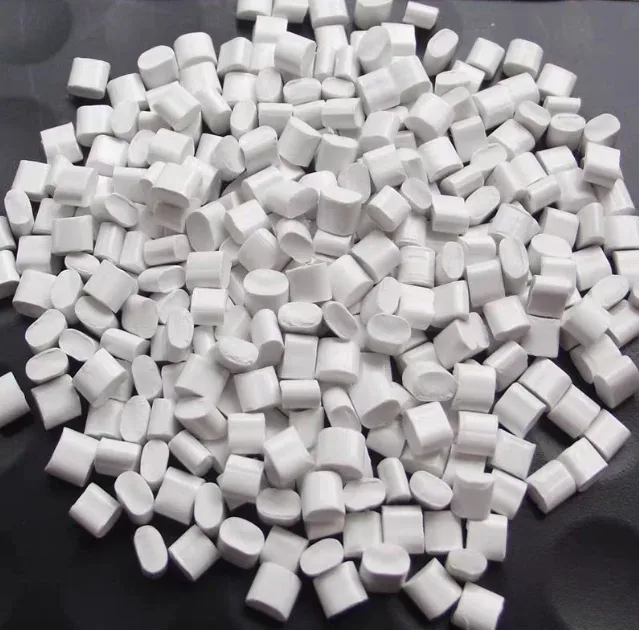

Transparent nylon 12↗
Transparent nylon 12↗Transparent nylon 12
Techinherit TN900
A transparent nylon 12 for selection around optical clarity, resilience and toughness in transparent structures, electronics and industrial products.

TECHINHERIT / MATERIALS
ENGINEERED MATERIALS
A MATERIAL FOR YOUR APPLICATION
Browse by category, base resin or keyword. Compare materials to clarify the performance directions that matter to your project.
Transparent nylon 12↗A transparent nylon 12 for selection around optical clarity, resilience and toughness in transparent structures, electronics and industrial products.
 Transparent nylon 12↗
Transparent nylon 12↗An amorphous transparent nylon combining stiffness, low water uptake and chemical resistance for automotive, electronic and packaging applications.
 Transparent nylon 12↗
Transparent nylon 12↗A high-transmission transparent nylon 12 for evaluating toughness and stress-cracking resistance in optical parts, clear housings and industrial components.
 Transparent nylon 12↗
Transparent nylon 12↗A bio-based transparent nylon for evaluating stiffness, low water uptake and hydrolysis resistance in automotive, electronic and premium packaging components.
 Transparent nylon 12↗
Transparent nylon 12↗A transparent nylon 12 for heat resistance, toughness and clear appearance in vessels, electronics and optical parts; confirm contact compliance for the intended use.
 Long-chain nylon↗
Long-chain nylon↗A bio-based long-chain nylon for low water uptake, low-temperature toughness and dimensional stability in monofilaments, cable coatings and mechanical parts.
 Long-chain nylon↗
Long-chain nylon↗A long-chain nylon for toughness, oil resistance and electrical applications including bristles, monofilaments, cable coatings and instrument components.
 Long-chain nylon↗
Long-chain nylon↗A bio-based long-chain nylon for toughness, strength, low moisture uptake and controlled shrinkage in automotive, instrument and industrial parts.
 Long-chain nylon↗
Long-chain nylon↗A long-chain nylon for low moisture uptake, oil resistance and dimensional stability in extrusion, injection molding, blow molding and tubing.
 Long-chain nylon↗
Long-chain nylon↗A long-chain nylon for low-temperature toughness, low water uptake and dimensional stability in extrusion, injection molding, blow molding and powder processing.

Conductive & antistatic↗A ABS-based antistatic material direction. Define surface or volume resistance targets, test conditions, mechanical needs and appearance requirements as the starting point for selection.

Conductive & antistatic↗A PP-based conductive material direction. Define surface or volume resistance targets, test conditions, mechanical needs and appearance requirements as the starting point for selection.

Conductive & antistatic↗A PC-based conductive material direction. Define surface or volume resistance targets, test conditions, mechanical needs and appearance requirements as the starting point for selection.

Conductive & antistatic↗A PA66-based antistatic material direction. Define surface or volume resistance targets, test conditions, mechanical needs and appearance requirements as the starting point for selection.

Conductive & antistatic↗A PA6-based antistatic material direction. Define surface or volume resistance targets, test conditions, mechanical needs and appearance requirements as the starting point for selection.

Conductive & antistatic↗A PA-based conductive material direction. Define surface or volume resistance targets, test conditions, mechanical needs and appearance requirements as the starting point for selection.

Conductive & antistatic↗A ABS-based conductive material direction. Define surface or volume resistance targets, test conditions, mechanical needs and appearance requirements as the starting point for selection.
 Carbon-fiber composites↗
Carbon-fiber composites↗A carbon-fiber composite direction based on PPS. Consider fiber distribution, structural design and processing to assess lightweight and stiffness requirements together.
 Carbon-fiber composites↗
Carbon-fiber composites↗A carbon-fiber composite direction based on PC. Consider fiber distribution, structural design and processing to assess lightweight and stiffness requirements together.
 Carbon-fiber composites↗
Carbon-fiber composites↗A carbon-fiber composite direction based on ETFE. Consider fiber distribution, structural design and processing to assess lightweight and stiffness requirements together.
 Carbon-fiber composites↗
Carbon-fiber composites↗A carbon-fiber composite direction based on PA6. Consider fiber distribution, structural design and processing to assess lightweight and stiffness requirements together.
 Carbon-fiber composites↗
Carbon-fiber composites↗A carbon-fiber composite direction based on PA66. Consider fiber distribution, structural design and processing to assess lightweight and stiffness requirements together.
 Carbon-fiber composites↗
Carbon-fiber composites↗A carbon-fiber composite direction based on PA12. Consider fiber distribution, structural design and processing to assess lightweight and stiffness requirements together.
 Carbon-fiber composites↗
Carbon-fiber composites↗A carbon-fiber composite direction based on PEEK. Consider fiber distribution, structural design and processing to assess lightweight and stiffness requirements together.
 Carbon-fiber composites↗
Carbon-fiber composites↗A carbon-fiber composite direction based on PVDF. Consider fiber distribution, structural design and processing to assess lightweight and stiffness requirements together.
 Carbon-fiber composites↗
Carbon-fiber composites↗A carbon-fiber composite direction based on PEI. Consider fiber distribution, structural design and processing to assess lightweight and stiffness requirements together.
 Carbon-fiber composites↗
Carbon-fiber composites↗A carbon-fiber composite direction based on PFA. Consider fiber distribution, structural design and processing to assess lightweight and stiffness requirements together.
 Carbon-fiber composites↗
Carbon-fiber composites↗A carbon-fiber composite direction based on Thermoplastic resin. Consider fiber distribution, structural design and processing to assess lightweight and stiffness requirements together.
This catalog introduces material systems and functional directions. Confirm specific grades, performance data, colors and supply arrangements with our materials team.
MATERIALS / ENGINEERING / POSSIBILITIES